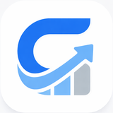

Gael — Invest by strategy, across every brokerA local-first wealth tracker for someone who invests through several Mexican and US brokers. You log each trade once; Gael rebuilds your holdings from that ledger and works out what to buy or sell to stay on target — but it never places a trade itself. Nothing is stored directly: cost basis, P&L, and drift are all computed on demand from an append-only transaction log, which is what keeps stock splits and FIFO cost-basis rules correct without ever rewriting history.
Python
FastAPI
React/TypeScript
Electron
SQLite
Private repo — code not public.